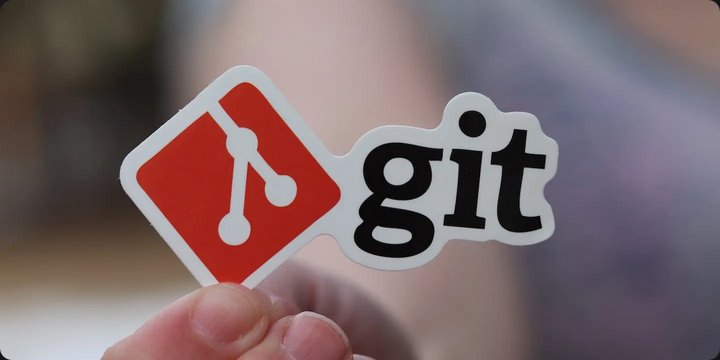
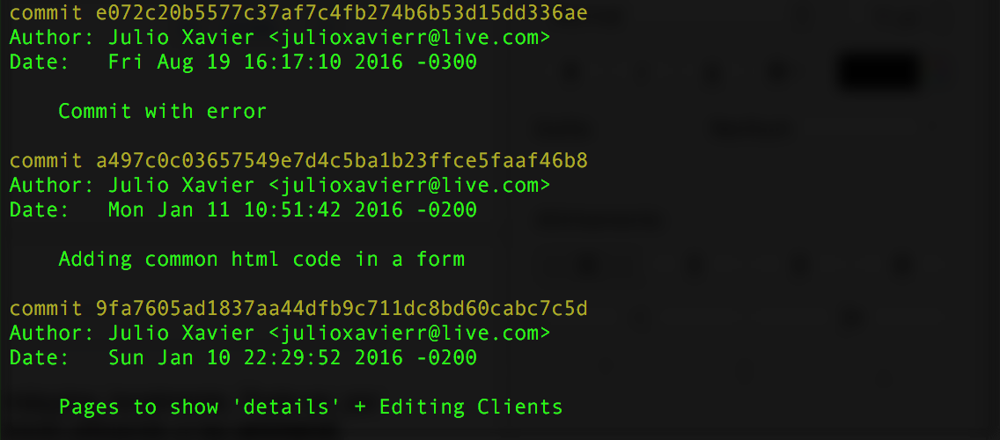
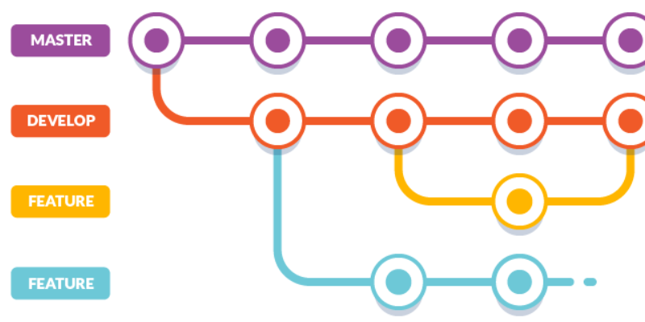
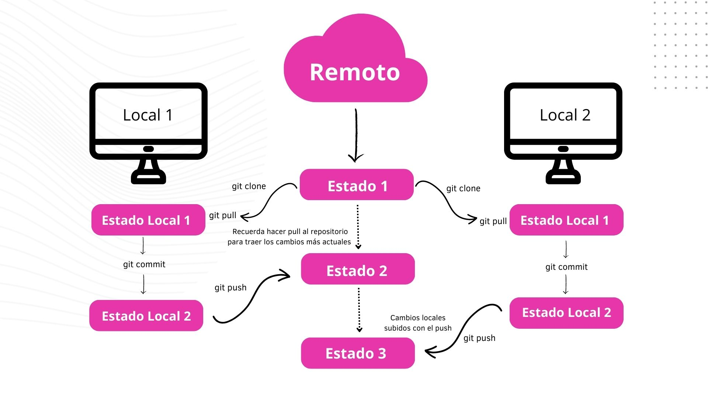
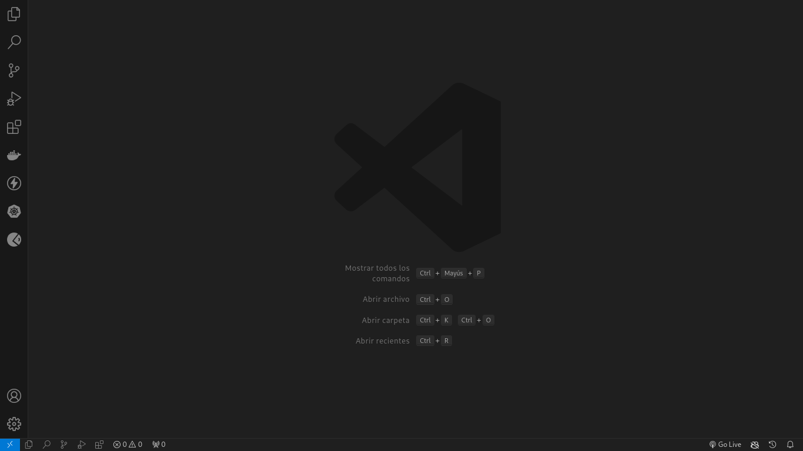
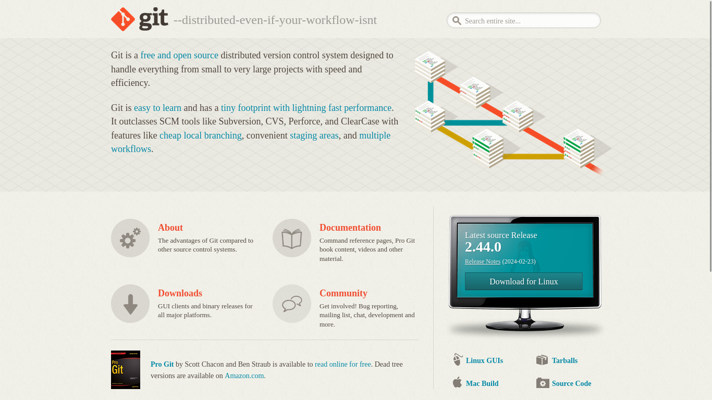
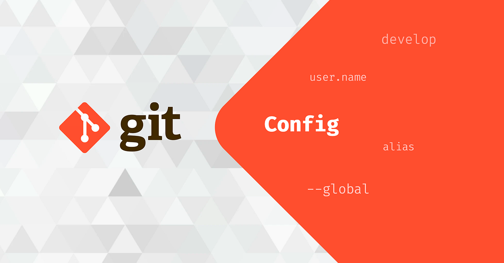

Git y GitHub 🕹️
¿Qué es Git y GitHub? 🕹️
Git y GitHub son herramientas ampliamente utilizadas en el desarrollo de software para el control de versiones y la colaboración en proyectos.
Git es un sistema de control de versiones distribuido que permite realizar un seguimiento de los cambios en el código fuente durante el desarrollo de software. Fue creado por Linus Torvalds en 2005 y se utiliza mediante la línea de comandos o a través de interfaces gráficas de usuario.
GitHub, por otro lado, es una plataforma de alojamiento de repositorios Git en la nube. Proporciona un entorno colaborativo donde los desarrolladores pueden compartir y trabajar en proyectos de software de forma conjunta. Además, ofrece características adicionales como seguimiento de problemas, solicitudes de extracción y despliegue continuo.
En este tutorial, aprenderás los conceptos básicos de Git y GitHub, así como su uso en un proyecto de software real.
¿Quiénes utilizan Git? 🌍

Es ampliamente utilizado por desarrolladores de software en todo el mundo, desde estudiantes hasta grandes empresas tecnológicas. Es una herramienta fundamental para el desarrollo colaborativo y la gestión de proyectos de software.
¿Cómo se utiliza Git? 💻

Se utiliza mediante la línea de comandos o a través de interfaces gráficas de usuario. Proporciona comandos para realizar operaciones como:
- Inicializar un repositorio,
- Realizar cambios,
- Revisar historial,
- Fusionar ramas,
- Entre otros.
¿Para qué sirve Git? 📝

Sirve para realizar un seguimiento de los cambios en el código fuente, coordinar el trabajo entre varios desarrolladores, revertir cambios no deseados y mantener un historial completo de todas las modificaciones realizadas en un proyecto.
¿Por qué utilizar Git? 🤔

Ofrece varias ventajas, como:
- La capacidad de trabajar de forma distribuida
- La gestión eficiente de ramas para desarrollar nuevas funcionalidades
- Corregir errores sin afectar la rama principal
- La posibilidad de colaborar de forma efectiva con otros desarrolladores.
¿Dónde puedo utilizar Git? 🌐
Puede ser utilizado en cualquier sistema operativo, incluyendo Windows, macOS y Linux. Además, es compatible con una amplia variedad de plataformas de alojamiento de repositorios, siendo GitHub una de las más populares.
Pasos Básicos 📝
Es recomendable tomar en cuenta una herramienta para la edición de código, como Visual Studio Code, Sublime Text o Atom, para trabajar con Git y GitHub de manera eficiente.
Instalación de Visual Studio Code 📥

Si aún no tienes Visual Studio Code instalado, puedes descargarlo desde https://code.visualstudio.com/download. Es una herramienta gratuita y de código abierto que proporciona una interfaz amigable para trabajar con Git y GitHub.
A continuación se presentan los pasos básicos para utilizar Git y GitHub en un proyecto de software.
Descarga e Instalación de Git 📥

- Visita el sitio web oficial de Git en https://git-scm.com/downloads.
- Descarga el instalador adecuado para tu sistema operativo y sigue las instrucciones de instalación.
Configuración 🛠️

Una vez instalado Git, es necesario configurar tu nombre de usuario y dirección de correo electrónico. Esto se puede hacer mediante los siguientes comandos:
git config --global user.name "Tu Nombre"
git config --global user.email "tu@email.com"Creación de un Repositorio “helloWorld” en Python 🐍
- Crea una nueva carpeta para tu proyecto y ábrela en Visual Studio Code.
- Crea un archivo Python llamado hello_world.py y escribe el siguiente código:
def welcome_message():
name = input("Ingrese su nombre: ")
print("Bienvenio,", name, "al curso de Django y React!")
if __name__ == "__main__":
welcome_message()- Guarda el archivo y abre una terminal en Visual Studio Code.
- Inicializa un repositorio Git en la carpeta de tu proyecto con el siguiente comando:
git init- Añade el archivo al área de preparación con:
git add hello_world.py- Realiza un commit de los cambios con un mensaje descriptivo:
git commit -m "Añadir archivo hello_world.py"Comandos Básicos de Git 📝
- git init: Inicializa un nuevo repositorio Git.
- git add
: Añade un archivo al área de preparación. - git commit -m “
” : Realiza un commit de los cambios con un mensaje descriptivo. - git push: Sube los cambios al repositorio remoto.
- git pull: Descarga cambios del repositorio remoto.
- git branch: Lista las ramas disponibles.
- git checkout
: Cambia a una rama específica. - git merge
: Fusiona una rama con la rama actual. - git reset
: Descarta los cambios en un archivo. - git diff: Muestra las diferencias entre versiones.
Estados en Git 📊
- Local: Representa los cambios que realizas en tu repositorio local antes de hacer un commit. Estos cambios están únicamente en tu máquina.
- Staging: Indica los cambios que has añadido al área de preparación con el comando
git add. Estos cambios están listos para ser confirmados en el próximo commit. - Commit: Son los cambios que has confirmado en tu repositorio local con el comando
git commit. Estos cambios se han guardado de manera permanente en tu repositorio local. - Server: Son los cambios que has subido al repositorio remoto con el comando
git push. Estos cambios están disponibles para otros colaboradores del proyecto.
Tutorial: Moviendo Cambios entre Estados en Git 📝
Introducción
En este tutorial, aprenderemos a utilizar Git para gestionar cambios en nuestro proyecto y moverlos entre diferentes estados. Utilizaremos un ejemplo práctico para comprender mejor estos conceptos.
def welcome_message():
name = input("Ingrese su nombre: ")
print("Bienvenio,", name, "al curso de Django y React!")
if __name__ == "__main__":
welcome_message()Sección 1: Modificar Archivos en el Repositorio
En esta sección, aprenderemos cómo realizar cambios en nuestros archivos y reflejarlos en Git.
Mover Cambios de Local a Staging:
- Abre el archivo hello_world.py en Visual Studio Code.
- Modifica el mensaje de bienvenida a “Bienvenido” en lugar de “Bienvenio”.
- Guarda los cambios y abre una terminal en Visual Studio Code.
Hemos corregido un error en nuestro archivo y queremos reflejarlo en Git.
def welcome_message():
name = input("Ingrese su nombre: ")
print("Bienvenido,", name, "al curso de Django y React!")
if __name__ == "__main__":
welcome_message()Agregar Cambios de Local a Staging:
git add hello_world.pyHemos añadido los cambios al área de preparación y están listos para ser confirmados en el próximo commit.
Sección 2: Confirmar Cambios en un Commit
En esta sección, aprenderemos cómo confirmar los cambios en un commit y guardarlos de manera permanente en nuestro repositorio.
Mover Cambios de Staging a Commit:
git commit -m "Corregir mensaje de bienvenida"Hemos confirmado los cambios en un commit con un mensaje descriptivo.
Sección 3: Creación y Fusión de Ramas
En esta sección, aprenderemos cómo crear y fusionar ramas en Git para desarrollar nuevas funcionalidades de forma aislada.
Crear una Nueva Rama:
git branch featureHemos creado una nueva rama llamada “feature” para desarrollar una nueva funcionalidad.
Implementar Funcionalidades en la Rama:
- Abre el archivo hello_world.py en Visual Studio Code.
- Añade una nueva función para mostrar un mensaje de despedida.
- Guarda los cambios y abre una terminal en Visual Studio Code.
- Añade los cambios al área de preparación y confírmalos en un commit.
- Cambia a la rama principal con
git checkout main.
Fusionar Ramas con la Rama Principal:
git merge featureHemos fusionado la rama “feature” con la rama principal y añadido la nueva funcionalidad al proyecto.
Sección 4: Revertir Cambios en un Archivo
En esta sección, aprenderemos cómo revertir cambios en un archivo y deshacerlos en Git.
Revertir Cambios en un Archivo:
git reset hello_world.pyHemos revertido los cambios en el archivo hello_world.py y deshecho las modificaciones realizadas.
Conclusión
En este tutorial, hemos aprendido a gestionar cambios en nuestro proyecto y moverlos entre diferentes estados en Git. Estos conceptos son fundamentales para trabajar de forma eficiente en proyectos de software y colaborar con otros desarrolladores.
Asignación
Este proyecto de ejemplo está escrito en Python y se prueba con pytest.
La Asignación
Las pruebas están fallando en este momento porque el método no está devolviendo la cadena correcta. Corrige el código del archivo hello.py para que las pruebas sean exitosas, debe devolver la cadena correcta “Hello World!”x
El comando de ejecución del test es:
pytest test_hello.py¡Mucha suerte!